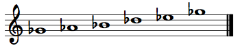
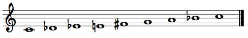
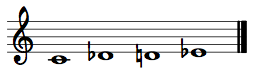
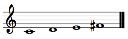
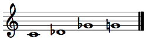
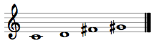
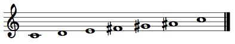
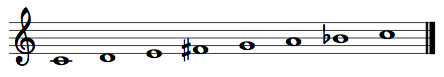
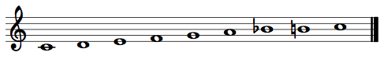
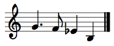

Musicianship Resources
Analyzing atonal music
Following are a few tips, terms, and common structures that will be helpful for analyzing early twentieth-century atonal music, such as that composed by members of the Second Viennese School (Schönberg, Berg, Webern).
Intervals
Always use chromatic intervals rather than diatonic intervals when analyzing and comparing pitch materials. (See Intervals and dyads resource.)
The 12-pitch-class cycle — clock face
Atonal composers often begin with highly organized set of pitch classes, and then deploy the pitch classes in a wide variety of registers. Thus, it is helpful to eliminate register as a factor in order to find which motives, chords, and fragments belong in the same category. To do so, take a clock face with the twelve pitch-classes (spelling does not matter)

and mark all the pitch classes involved in the fragment. For example, here is a C-major scale:

This will make it easy to find the interval patterns in a set of pitch classes, no matter how they are distributed in the various registers and instruments on the score.
Common pitch-class collections
Diatonic – The usual major and natural-minor collections (white key collection and all of its transpositions).


Pentatonic – The black key collection and all of its transpositions, prime form: (02479).


Octatonic – An eight-pitch-class scale that alternates i1 and i2 (semitones and whole-tones).

Hexatonic – A six-pitch-class scale that alternates i1 and i3 (semitones and minor thirds/augmented seconds).

X-cell – The chromatic tetrachord, or a four-pitch-class chromatic cluster, prime form: (0123).

Y-cell – The whole-tone tetrachord, or a four-pitch-class whole-tone cluster, prime form: (0246). It is a subset of the whole-tone scale.

Z-cell – A four-pitch-class collection that alternates i1 and i5 (semitones and perfect fourths), prime form: (0167). Two Z-cells a minor third apart form an octatonic scale.

French-sixth – The usual french-augmented-sixth-chord collection, but stripped of its tonal function, prime form: (0268). It is a subset of the whole-tone collection and octatonic collections. Like the Z-cell, two French-sixth chords a minor third apart form an octatonic scale.

Whole-tone scale – A six-pitch-class scale made up of successive whole tones, prime form: (02468T).

Acoustic scale – A seven-pitch-class scale that resembles the major scale, but with fa raised to fi and ti lowered to te, in order to match the seventh and eleventh partials of the natural harmonic series.

Dual-diatonic – An eight-pitch-class scale formed by the union of two diatonic collections separated by fifth—for example C major and G major: C – D – E – F – F# – G – A – B. It contains two diatonic scales, two Z-cells, and two Y-cells. It was used primarily by Bartók.


Common operations
Transposition
Pitch transposition involves moving every pitch in a collection up or down by a specified interval.
Pitch-class transposition does the same thing. However, because of the cyclical nature of pitch classes, PC-transposition also corresponds to rotation of a collection of pitch classes around a clock face.
Transposition operations can be denoted by a capital "T" followed by a subscript indicating the number of semitones of the transposition. For pitch-class transpositions, use ordered pitch-class intervals (numbers 0–11). Transposing a collection or fragment up a whole step is labeled T2; up a tritone is T6, down a semitone is T11 (mod12(–1) = 11).
Inversion
Melodic inversion occurs when all ascending melodic intervals in a melody are replaced with descending intervals of the same size, and all descending replaced with ascending of the same size. The following melodies are inversion of each other.


Pitch inversion occurs when all pitches are inverted, or flipped, around an axis of symmetry in pitch space (in other words, the axis of symmetry is a pitch). In the above melodic example, the axis is G4. Since the first pitch is G4, it remains unchanged. The next pitch (A4) is two semitones above G4; it is replaced with F4, two semitones below G4. B4 (i4 above G4) is replaced by E-flat4 (i4 below G4). And so on.
Pitch inversion can apply to a melody, but also to a simultaneity, or to a collection that a passage is based on.
In general, when two melodies, simultaneities, or collections can be related by pitch inversion, they are considered to be equivalent in some sense (but, obviously, not identical).
Pitch-class inversion occurs when all pitch classes of a collection are inverted, or flipped, around an axis of symmetry in pitch-class space (in other words, the axis of symmetry is a pitch class). Since pitch-class space is cyclical (once you go up 12 semitones, you are back where you started), the axis of symmetry is comprised of two pitch classes a tritone apart. This is most clearly seen on a clock face.

When the above set is inverted around the axis C/F-sharp, it becomes the following set:

When pitch classes are labeled by number (C = 0, C-sharp = 1, . . . B = 11), pitch class inversion can be calculated by determining a sum and finding the difference between that sum and each pitch class in the original collection. The difference is the pitch class for the new collection.
In the above example, the set {C, D, E, F} is {0, 2, 4, 5}. Its inversion {G, G-sharp, B-flat, C} is {7, 8, 10, 0}. When inverting the original around the C/F-sharp axis, C becomes C (0 becomes 0), D–B-flat (2–10), E–G-sharp (4–8), and F–G (5–7). All of these pitch-class pairs add to 0 or 12, which are equivalent modulo12. Thus the inversion sum is 0, and the inversion is labeled I0.
Inverting about the C-sharp/G axis is I2. Inverting about the D/G-sharp axis is I4. Inverting about the E-flat/A axis is I6. Inverting about the E/B-flat axis is I8. Inverting about the F/B axis is I10. Odd number sums will place the axis between pitch classes (I1 between C/C-sharp and F-sharp/G, fox example).
Some atonal composers like to make use of sets that invert and/or transpose onto themselves. Sets that can be inverted around an axis of symmetry without changing any pitch classes are called inversionally symmetrical. Sets that can be transposed a certain interval without changing any of its pitch classes are called transpositionally symmetrical or rotationally symmetrical. The Z-cell and French-Sixth collections are sets that are both rotationally and inversionally symmetrical.